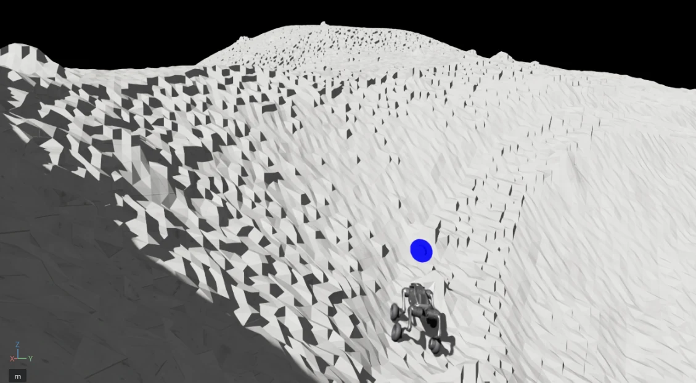
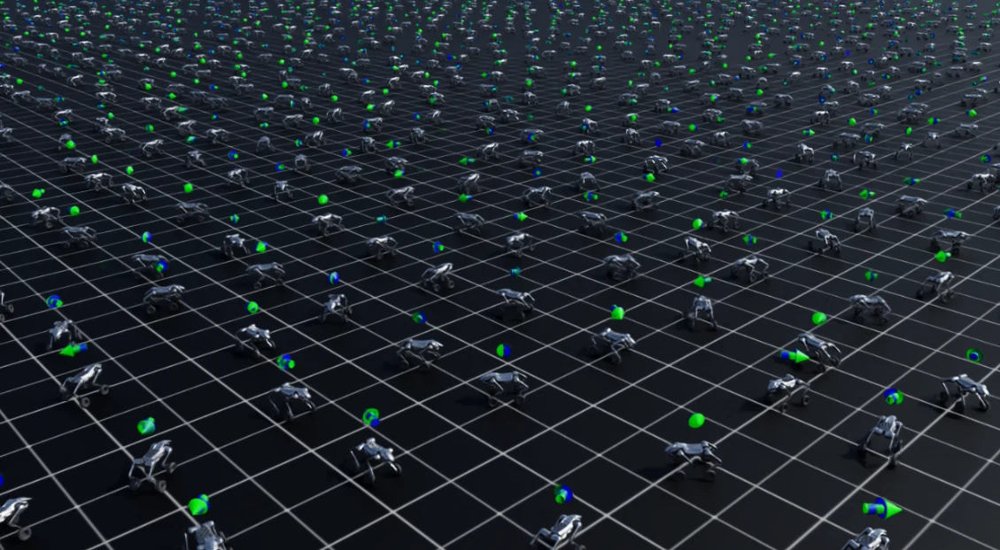

Physical AI for space. Wheels for distance. Legs for what lies ahead.

NASA’s Artemis program and U.S.-China competition are making the lunar south pole a strategic frontier. [1,3] Establishing a lasting presence requires access to challenging craters and ground truth on potential water resources. [2] The opportunity extends beyond reaching a site: missions need closely spaced measurements, precise instrument placement and repeat visits. REXMI is being designed for this sustained surface work - turning difficult terrain into mission access and orbital resource clues into evidence that informs where to explore, invest and build.
Sustaining that infrastructure creates continuous opportunities for mobile, adaptive robots: inspecting assets, monitoring equipment condition and supporting servicing across lunar work sites.
FARFIELD Robotics is developing REXMI, a configurable wheeled quadruped for lunar surface work. Wheels cover distance; articulated legs adapt posture, clearance and contact placement. Crater access is part of the design.
Scout & recon. Map hazards and navigable routes between landing areas, science targets and work sites.
Resource mapping & crater access. Carry spectrometers or ground-penetrating radar to promising sites. Ground measurements test orbital resource maps before investment in in-situ resource utilization (ISRU). Planned deployment hardware will place instruments along the route.
Supplies. Carry mission-sized instruments, equipment and tools to reduce astronaut workload.
Inspection. Revisit infrastructure and instruments to track damage, dust and obstructions.
Our planned revenue streams combine robot systems, payload integration, mission support and ground-truth data sales. Customers include mission operators, science teams and resource developers seeking route surveys, resource maps and repeat observations.
Adaptive mobility. Instrument access. Repeatable surface work.

Four articulated legs give REXMI the freedom to change how it meets the ground. Wheels provide efficient transit; legs adjust stance, clearance and contact placement. We are developing physical AI that adapts movement to unfamiliar obstacles and changing soil conditions, with gaits designed to recover from traction loss, slippage and sinkage. Together, these capabilities are designed to enable >40° slope handling - a new class of adaptive rovers for harsh craters.
Lunar mobility simulation. Train movement and recovery across slopes, broken terrain and variable traction.
Adaptive thermal control. Manage heat and power for sunlit terrain and shadowed crater work.
Perception. Turn terrain sensing into navigable routes and location-tagged science.
Dust protection. Engineer protected mechanisms for abrasive lunar dust.
Robot validation. Bring learned autonomy to physical hardware, payloads and representative terrain.
Physical AI for space, across quadrupeds, humanoids and hybrids. REXMI is the starting point.
Planning a lunar payload or investing in physical AI? Let's talk.